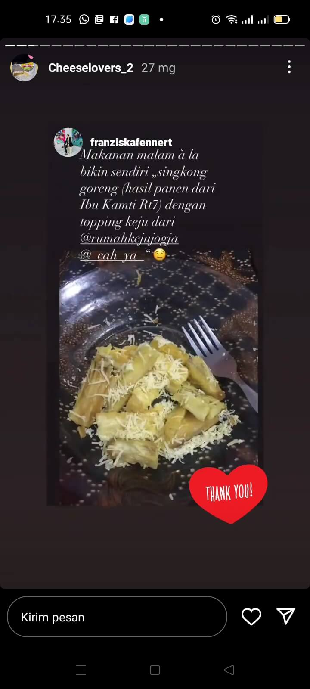
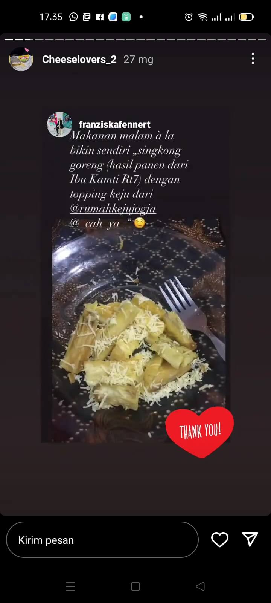

Natural, asli, murni

diproduksi oleh Artisan cheese maker

Menggunakan bahan (utama) lokal pilihan

Tersertifikasi halal

Mengedukasi masyarakat tentang keju

Dikelola oleh sebagian besar perempuan

Menuju gerakan sosial Fairtrade

Semua proses tertelusur

Kolaborasi & gotong royong menjadi kunci dalam keberlanjutan

 
